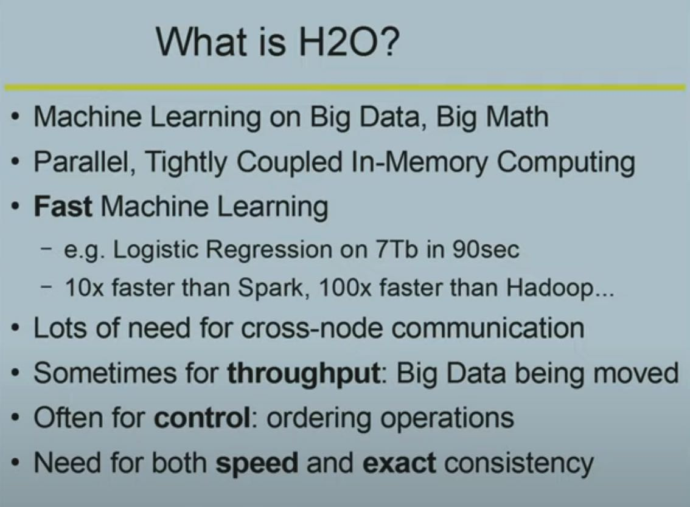
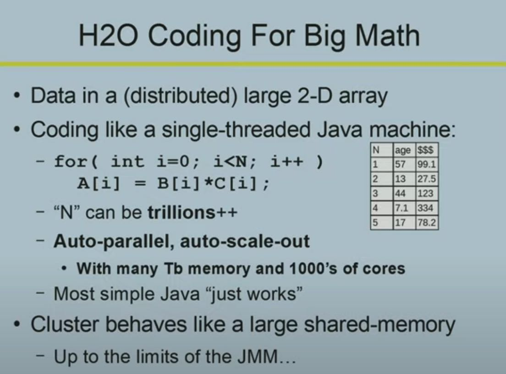
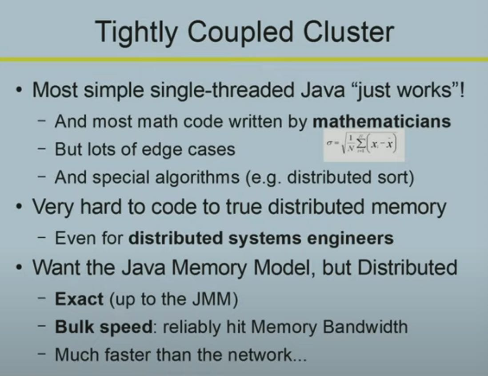
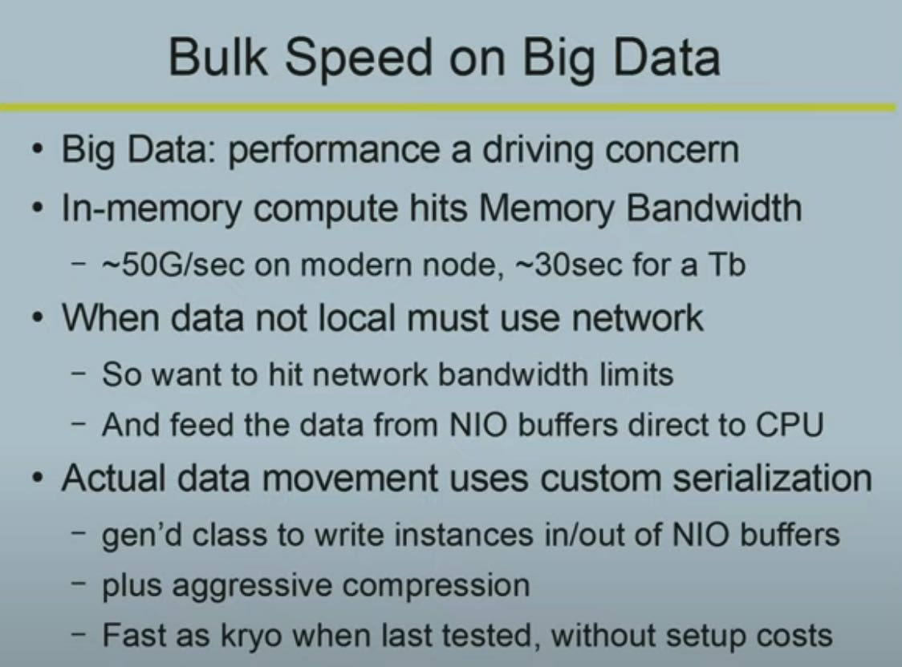
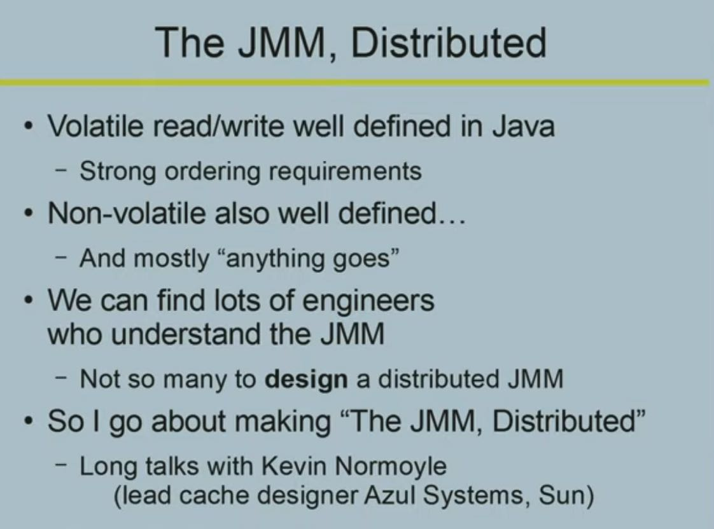
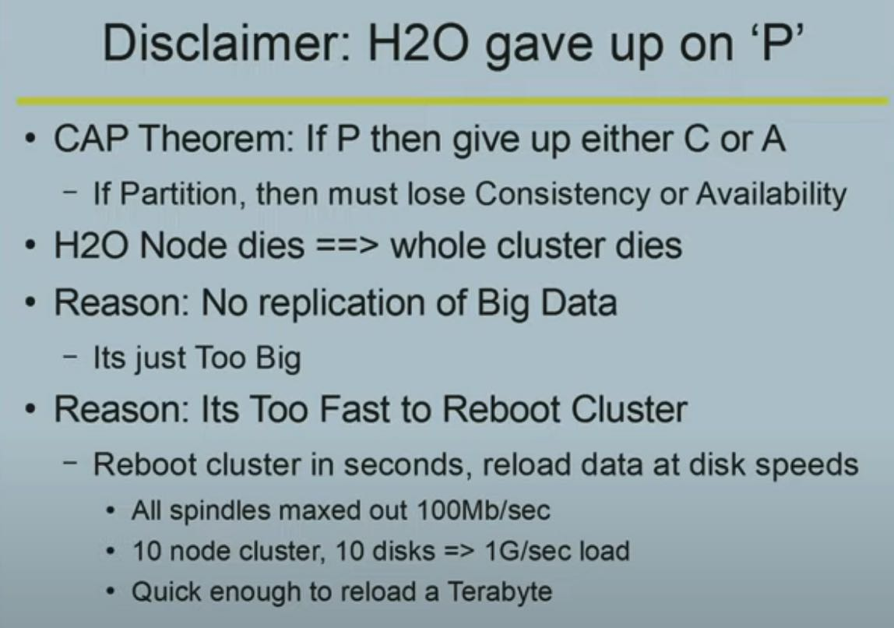
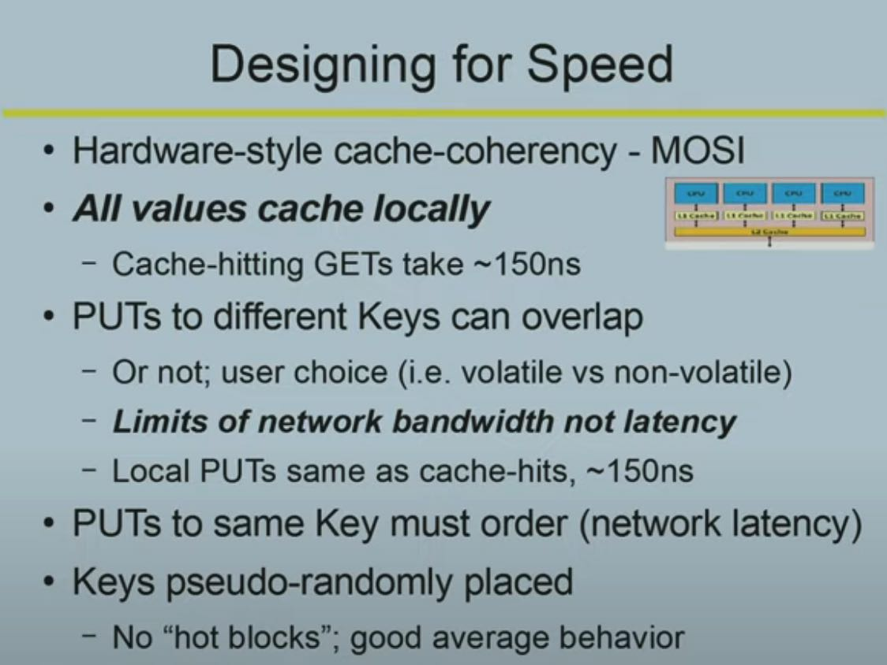
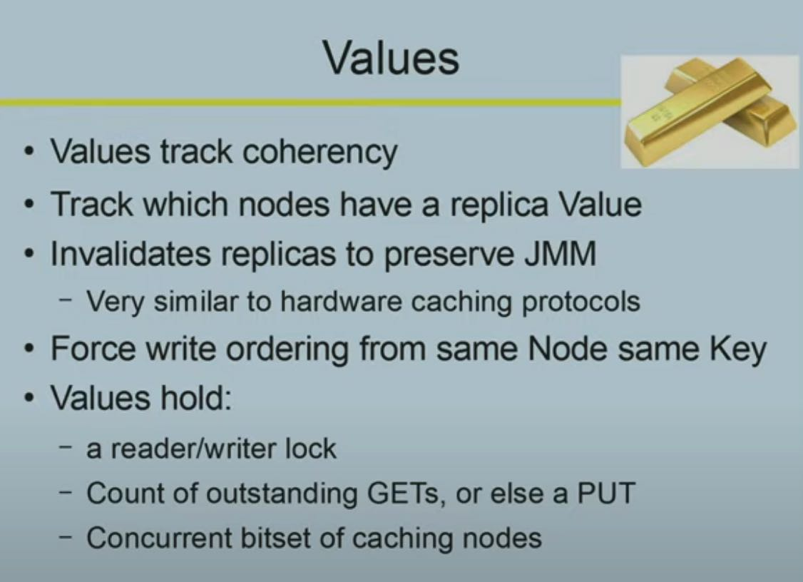

The H2O distributed K/V algorithm by Cliff Click
https://www.youtube.com/watch?v=kTMQCEkf_AA
H2O是一个机器训练平台，用户只需要编写基本的Java代码（可能增加某些注解吧？）就可以让自己的代码分布式地运行在H2O平台上面，H2O自动并行化，并且管理好内存中的数据，这个对于机器学习训练模型来说非常容易。


这个视频里面讲到的就是如何管理内存中的数据（模型数据），对外界面是一个KV全内存存储系统，和其他存储系统差别就是，它的一致性模型是分布式JMM模型：如果某个字段是volatile，那么语义就和JMM定义的一致，我理解就是线性模型吧？使用distributed JMM模型好处就是，这个东西对于程序员来说好理解，因为即便是对于分布式专家来说，写好分布式代码也是很难的。



为了简化系统的设计，H2O放弃了P。这个和我在 Heidi Howard — Liberating distributed consensus - YouTube https://www.youtube.com/watch?v=l4hxsYq9zUc&list=WL 里面假设的差不多，她认为实际情况下面server failure并不是特别常见。尤其是对于机器学习这种大量计算的应用，如果为了做fault-tolerant而实现持久化的话，那么可能性能就上不来。此外重启整个平台其实也是非常快，考虑到使用的还是Java代码，也不太可能出现崩溃情况。

实现上其实也没有太神秘的地方（但是这个东西做好的确是很难的）。所有的东西都是为了速度，所以GET几乎都是从本地cache来的，PUT着重优化吞吐而不是延迟情况。 每个Key都有一个home node, 认为这个东西就是source of truth. 而Value里面会追踪这个哪些节点在使用它。这个coherency非常重要，是因为如果某个key对应的value发生了修改的话，那么之前old-value的nodes需要被通知到(invalidated). Value里面还有read/write lock 以及in-flight rpc count，这个有点偏细节了，我也不是特别清楚。可以看到对于volatile key的PUT延迟是会比较高的，而volatile key的GET访问如果没有在local cache的话会存在一次RTT.


